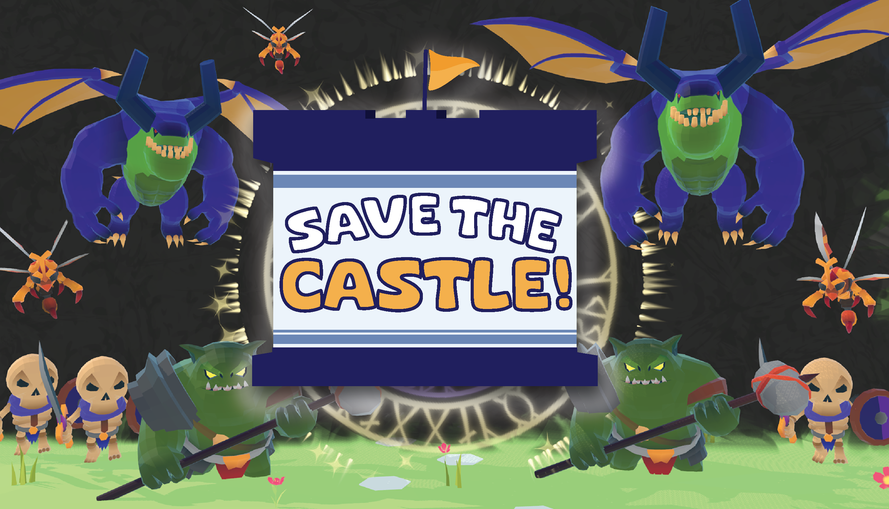

Major life changes!! Cat and I are moving to SF!!
Published 09/14/2025 - XXX words
It's hard keeping friends up-to-date with adult life, especially if you live in different cities. So I'm writing a general update post to hit the highlights of the last few years. 🤞🤞 Hopefully this isn't the last blog post I write!! 🤞🤞
Starting at the top: I got a job!
After two full years of self/un/under-employment, I landed an actual big-boy job with a (significant hehe) salary. I'll finally be getting back to writing code for a living!! I just signed a contract with C3.ai, where I'll be a generalist software engineer subcontracting for the federal government. Passing the technical interviews was incredibly nerve-wracking. I never like coding with someone over my shoulder, doubly so when there is a life-changing job hanging in the balance. But I didn't sit through dozens of lectures about computer science fundamentals to *not* know Big-O time complexity. Sure enough, I passed that stage (and the subsequent ones!) and was presented with an offer I couldn't refuse. The campus looks absolutely gorgeous, and the team seems really cool. I am so incredibly excited to see what interesting problems I'll be solving on a day-to-day basis. And don't worry, Cat has STRICT instructions to not let me become a stereotypical SF tech bro.
Goodbye Sessions, I will genuinely miss you...
 Sessions West Coast Deli is an adorable little burger / beer / sandwich shop
in Woodbridge, and only one of two restaurants with a view of the lake.
It was a delightful place to work & earn rent while I was job-searching.
I took every single one of my thirties by the lake, my coworkers were friendly and cool,
and the customers were fun to chat with. I will forever remember my firepit regulars; a bunch of
cool local parents who would hang out and sip bevs and chat while the munchkins ran around the plaza.
There were multiple days where they'd be at Sessions longer than I was.
Sessions West Coast Deli is an adorable little burger / beer / sandwich shop
in Woodbridge, and only one of two restaurants with a view of the lake.
It was a delightful place to work & earn rent while I was job-searching.
I took every single one of my thirties by the lake, my coworkers were friendly and cool,
and the customers were fun to chat with. I will forever remember my firepit regulars; a bunch of
cool local parents who would hang out and sip bevs and chat while the munchkins ran around the plaza.
There were multiple days where they'd be at Sessions longer than I was.
One of my favorite things about Sessions was just HOW puppy friendly it was. Truly, the humans were just there to pay the tab. We used our plastic to-go boxes as puppy water bowls, and the dogs were usually SO excited to get a nice bowl of water. If that failed, I'd duck back into the kitchen and grab some salad chicken. I am not above bribing the affection of animals and small children.
{kind=link}
{kind=link}
{kind=link}
Goodbye Southbrook :(((
Yes, moving away from all our friends and family scares the absolute SHIT out of us. Her parents are here. Neither of my sisters are more than ninety minutes away. We love our friends so much. We're gonna miss board game nights, and D&D games over bowls of steaming pasta, and movie nights that are 5% movie and 95% chatting. We're really, really going to miss Irvine. Our Southbrook apartment was the first home we built together, and every corner of this cramped-ass one bedroom is full of memories we created. But we're taking this next step together, and I'm really excited to see the new home we make in the Bay Area

Holy shit we're gonna miss our friends so much. We're already planning our trips south, or virtual events, or literally anything to keep this amazing group of humans in our lives. From Pride Trains to brunch to blind Mario Kart, I love y'all <3

Our favorite part of this apartment was always the Woodbridge Lake (north flavor). It was truly the amenity that sold the apartment we chose, and that was one of the best decisions we've ever made. There is a GORGEOUS (if artificial) lake a mere mile from our front door? Yes please!! We loved to walk over, and hold hands and look at ducks, or pack a picnic and have a date on the lawn, or strap a hammock to a tree and sway gently in the breeze. I love this lake, and I love loving it with you.
I really liked this lake, and I took a lot of pictures of it. I have definitely run 5ks in less cinematic locations. In no particular order, here are 6 cool ones: 1, 2, 3, 4, 5, 6
{kind=link}
{kind=link}
{kind=link}
{kind=link}
{kind=link}
{kind=link}
I know we're replacing our lake days with the gosh dang San Francisco bay, but I'm going to miss this little pond! Happy lake day, love.

Strawberry Grove - our first apartment together

Cat and I had started living together the way all couples do, with spending the night at each others' places more and more until eventually there was a lease involved. For us, that happened summer of 2022 during a weird 2 months where all my clothes / stuff stayed downstairs in the living room. We didn't even own a couch yet; instead making do with an air mattress. One of the cats made muffins on it, and thereafter the poor mattress couldn't even last through an entire episode of the Good Place before ass touched floor. We made sure to get a real couch quickly after.
Sadly, all good things must come to an end. Our relationship with a housemate
turned extremely sour. Cat and I put ourselves first and
got the fuck out of there calmly moved out. We more-or-less threw a dart
at our Southbrook apartment, but we signed three leases there!
I'd say it all ended up ok :)
ICYMI - I released a game on Steam!
Save the Castle! is a VR action strategy where you can take over any tower on the battlefield. Take over an archer tower and empty your quiver like Legolas (or fully upgrade it and make the enemy hoardes cower before your GATLING GUN!). Throw fireballs from the mage tower, and set your foes ablaze. Become a lead-from-the-front general, and Save the Castle!
Development took around 18 months from start to finish. There were many challenges, from the technical (several of which would be interesting future blog posts), to the stress of "ahhhh is this going to sell any copies? or if that doesn't work, at least get me a job??" while draining savings every. single. month. But I did it! Eventually I got to release the game on Steam, for realsies! I even sold more than the four copies I expected friends to buy (52 at time of writing!) Most importantly, I did land a job, in no small part because of this project.
Release day was January 16th, 2025. Luckily, I had a rather firm deadline on the 17th, because we were going to a cabin in Big Bear! Not only did I not want to think about tweaks and patches and last minute bug fixes while up there, I also wanted to show off Castle 1.0 with pride. And I got to! People had so much fun playing the game that I made, and goodness it really felt like a real, mature game. For once, it wasn't a game-jam scale title, with 5 minutes of content. No, I had created something real, with actual, fun gameplay. My baby had grown up, and I watched every playtest that weekend with joy in my heart.
If you're interested in a more in-depth post-mortem, you can find that here (and if we've overloaded our server's free tier again, you can find a mirror on the internet archive here ) I just genuinely could not be more proud of this project, and the way it turned out.
I'm a professional blacksmith!*

*technically. I've been taking lessons there for about a year now, and my skills have come a looooooong way. The heritage museum is also a charming wedding venue, and couples have the option of hiring a smith to forge a cake cutter, make wedding favors, chat about the historical art of blacksmithing, that sort of thing. I'm not nearly good enough yet to be forging wedding gifts; rather I would be the one chatting with the wedding while master smith Caroline churned out hearts for the guests to keep.
(This part is top-secret proposal business, so if you're Cat, STOP READING!!) Ok, now that Cat has stopped reading.... Cat and I have always been obsessed with swords. One of the first large Christmas presents she ever got me was a sword, custom engraved with a quote meaningful to us. She's long said that the only thing she wants out of the proposal (besides the ring itself) is a proposal sword. Naturally, I took that to mean I had to forge the dang thing myself. Now, this may shock EVERYONE to learn, but you cannot, in fact, forge RenFaire-level swords after two lessons. Luckily, there is a fantastic historical blacksmithing shop in the OC Heritage Museum in Santa Ana. Their website may look like it is also from 1892, but everyone at the shop is incredibly talented and friendly. I'm going to miss everyone at the shop terribly, but I've already located two different shops to try out in the Bay Area.
-
I have made some cool projects, like:
- Leaf
- Fireplace Poker
- Heart wall hook, On wall
- Wall art for my sister Alisa and her husband Oscar
{kind=link}
{kind=link}
{kind=link}
{kind=link}
{kind=link}
P.S. Any Republican politician claiming that coal is still relevant in 2025 has never touched the damn stuff. It gets absolutely everywhere, to the point that I come home looking and smelling like I'd recently left my shift as a Mary Poppins extra. We have better fuels. We don't need to hold onto Victorian-era technology on the behalf of an industry that employs fewer people than Arby's